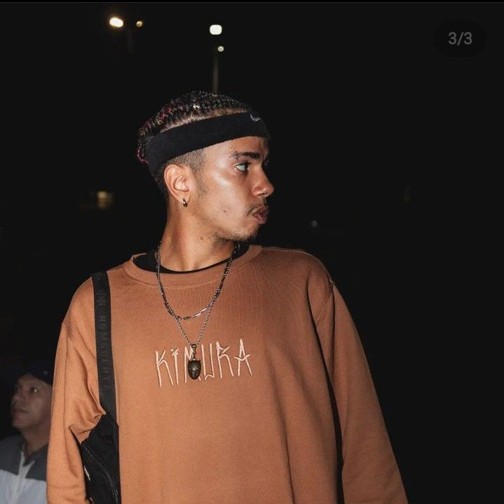

Início

A mente mais pensante do esgoto de GR começou nas batalhas muito novo,
ganhando destaque por suas construções, métrica e com um incrível jogo de palavras,
ele se demonstrou ser um MC fora da média e que tinha tudo para se destacar num futuro próximo.
Desenvolvimento

O desenvolvimento de Brennuz aconteceu principalmente na Batalha dos Estudantes,
onde ele protagonizou muitas batalhas incríveis contra Jotapê, estabelecendo assim
uma rivalidade que fazia com que ambos evoluíssem muito e de forma exponencial.
Na BDE Brennuz usava muito do seu jogo de palavras e entregava rimas muito inteligentes, o que
dava a ele uma notoriedade diferente, pois muitas de suas rimas fugiam completamente do senso comum.
Juntamente com essa característica marcante, o Donatello de GR passou a usar sua criatividade para
dominar diversos flows e drops.
Rei do Detroit

Tendo seu destaque nos anos de 2022 e 2023, Brennuz começou a receber o título de Rei do Detroit.
Pois domina este estilo de beat como ninguém e se destacava em uma área onde muitos de seus oponentes tinham dificuldades.
Mas não se deixe enganar, mesmo tendo este título, Brennuz ainda consegue se sobressair em qualquer tipo de
beat, pois exatamente como Donny, ele consegue se adaptar as situações e contorná-las
com inteligência e criatividade. O que o torna um adversário muito difícil para quem o enfrenta.
Futuro

Brennuz já pensou em parar de batalhar algumas vezes, decepcionou-se com o público
das batalhas e isso acabou desanimando ele de continuar. Contudo, a torcida de quem realmente
ama as batalhas é para que ele prossiga com sua carreira nas rodas de freestyle e mostre a todos
que mesmo sofrendo hate ele é capaz de se sobressair, além do mais, seu destaque nas músicas já é uma certeza próxima